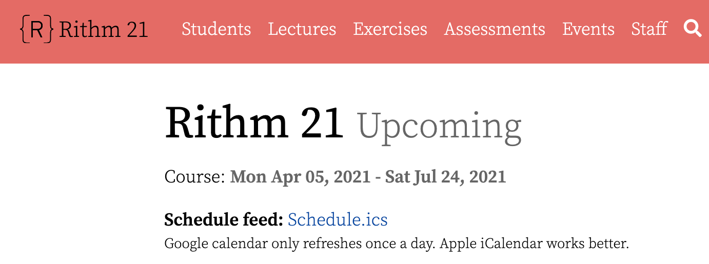

About
I am an aspiring web developer originally from Columbus, Ohio and I am currently based out of San Francisco.
I have 5 years of experience working in accounting and people operations before I transitioned to full-stack
web development.
I have experience in JavaScript, Python, Flask, Django, Express and React.
I am currently a student at Rithm School's full-stack web
development program. Prior to Rithm School, I graduated from University of California, Berkeley with a degree in economics
with a focus in accounting.
In my free-time I enjoy the outdoors, working out, and traveling!
Work
Rithm School Student Information System

The Student Information System is a web system to manage classes and their associated lectures, assessments, etc.
The system is built with Django and uses PostgreSQL to manage it's database data. While working on this application,
I helped implement a feature in student information system to integrate graduation certificate generator into Django admin portal by refactoring script,
adding to admin model and methods, pulling database data, using reportlab to create PDF certificate and uploading to Amazon S3.
In addition we added email authentication for users to login with as well as added tests for coverage respectively.
Warbler
Warbler is a mock twitter clone built fully with Flask & Jinja as a back-end application.
PostgreSQL is used to store our data and we used SQLAlchemy to manage our db relationships.
Similar to twitter, Users can signup/login, can have followers, can be following other users, and create
'warbles' which are tweets that other users can see.
User authentication/authorization is done with bcrypt for verification and flask sessions are used to store
current user information when previously logged in.
Tests are written for the views and models using the unittest module of Python.
Jobly
Jobly is a mock job board app built with an Express back-end and a React front-end. The app allows users to view companies and jobs and apply to various jobs.
User authentication is done with brcypt passwords and JsonWebToken to handle remembering a logged-in user.
The design uses a mix of Reactstrap and Bootstrap to add styling to the React Components and overall application.
Jest was used to perform unit and integration tests.
Contact Me